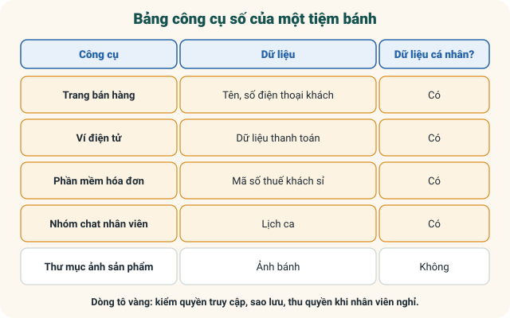

K10 · Năng lực số, AI và quy tắc nơi làm việc › Bậc 3 Vững vàng
Ôn tập: vận hành số tối giản, dữ liệu và AI
Bài này làm Tờ 8: Bảng công cụ số, thông báo dữ liệu và quy tắc AI. Mẫu in. Bài nối tiếp Dùng AI an toàn (N3). Bài không tư vấn pháp lý; nguồn luật ghi ở cuối bài.
1. Mục tiêu
- Lập Bảng công cụ số: dữ liệu gì, có dữ liệu cá nhân không, ai có quyền, sao lưu ở đâu.
- Viết thông báo xử lý dữ liệu cho khách và 3 quy tắc dùng AI.
2. Khởi động truy xuất
Câu hỏi trộn từ cả khóa. Trả lời không nhìn gì, rồi mới mở đáp án.
- Ba giả thuyết của Tờ 1 là gì?
- Vì sao ngưỡng quyết định phải viết trước khi chạy thử?
- Ba hành vi chủ động là gì?
- Trong bảng dòng tiền, tiền vào được ghi ở tuần nào?
- Bốn câu hỏi để chọn loại hình là gì?
- Gọi là "cộng tác viên" có làm thay đổi bản chất hợp đồng không?
- Phần cuối của pitch là gì, và phải có những gì?
Đáp án
- Khách hàng; vấn đề; mức sẵn lòng trả.
- Để không tự thuyết phục rằng "gần đạt cũng được" sau khi có kết quả.
- Tự bắt đầu; nhìn trước; vượt trở ngại.
- Tuần tiền về thật, không phải tuần bán.
- Trách nhiệm; số chủ; gọi vốn; giấy tờ.
- Không. Có việc, có lương, có quản lý thì là hợp đồng lao động.
- Đề nghị: cần gì, bao nhiêu, để đạt mốc nào, trước ngày nào.
Xem lại: Bản đồ khóa N7.
3. Giải thích
Doanh nghiệp nhỏ thường dùng nhiều công cụ số miễn phí, mỗi người tự chọn một cái. Sau một năm, không ai biết dữ liệu khách nằm ở đâu.
Bảng công cụ số. Mỗi công cụ một dòng: dùng làm gì; dữ liệu gì; có dữ liệu cá nhân không; ai có quyền vào; sao lưu ở đâu.

Bốn thói quen bảo mật tối thiểu:
- Bật xác thực hai lớp cho email, ngân hàng, trang bán hàng.
- Mỗi người một tài khoản, không dùng chung mật khẩu.
- Thu quyền ngay trong ngày nhân viên nghỉ.
- Sao lưu dữ liệu quan trọng ở một nơi thứ hai.
Thông báo xử lý dữ liệu. Khi thu dữ liệu cá nhân của khách, nói cho họ biết bằng lời dễ hiểu: thu gì; để làm gì; giữ bao lâu; ai được xem; liên hệ ai để xóa hoặc sửa.
Doanh nghiệp nhỏ có được miễn không? Luật Bảo vệ dữ liệu cá nhân có điều riêng cho doanh nghiệp nhỏ. Doanh nghiệp nhỏ và doanh nghiệp khởi nghiệp được chọn có thực hiện một số nghĩa vụ hay không, trong 5 năm kể từ 01/01/2026. Hộ kinh doanh và doanh nghiệp siêu nhỏ không phải thực hiện các nghĩa vụ đó.
Có ngoại lệ. Mức miễn không áp dụng nếu bạn kinh doanh dịch vụ xử lý dữ liệu cá nhân. Nó cũng không áp dụng nếu bạn trực tiếp xử lý dữ liệu cá nhân nhạy cảm. Được miễn một số nghĩa vụ cũng không có nghĩa là được dùng dữ liệu tùy ý.
Ba quy tắc dùng AI cho doanh nghiệp nhỏ
- Không đưa dữ liệu kháchvào công cụ AI chưa được chủ doanh nghiệp duyệt.
- Người kiểm trước khi gửiNội dung AI viết cho khách phải có người đọc lại.
- Ghi vào bảngCông cụ AI nào đang dùng cũng có một dòng trong Bảng công cụ số.
4. Ví dụ tại nơi làm việc Việt Nam
Tình huống giả định. Chị Ngân (Bài 3) có tiệm bánh online ở Cần Thơ với 3 nhân viên. Một nhân viên cũ đã nghỉ 2 tháng vẫn vào được trang bán hàng.
Chị lập Bảng công cụ số, có 6 công cụ. Ba công cụ có dữ liệu cá nhân của khách. Hai công cụ dùng chung một mật khẩu.
Chị đổi mật khẩu, tạo tài khoản riêng cho từng người, bật xác thực hai lớp. Chị thêm vào quy trình nghỉ việc: thu quyền trong ngày.
Chị viết thông báo dữ liệu, ghim ở trang bán hàng: "Tiệm lưu tên, số điện thoại và địa chỉ của bạn để giao bánh. Tiệm giữ 12 tháng, chỉ chủ tiệm và người giao hàng được xem. Muốn xóa, nhắn tin cho tiệm."
Một nhân viên dùng AI viết bài quảng cáo. Chị cho phép, nhưng không dán danh sách khách vào, và chị đọc lại trước khi đăng.
Vì sao cách này tốt: chị biết dữ liệu nằm ở đâu, chặn được lỗ hổng của nhân viên cũ. Khách biết dữ liệu của mình được dùng thế nào.
5. Thực hành
Tình huống giả định. Anh Phát (Bài 3) có dịch vụ vệ sinh máy lạnh với 5 nhân viên. Anh lưu địa chỉ và số điện thoại khách trong một bảng tính chia sẻ qua đường link.
Lập 3 dòng Bảng công cụ số. Viết thông báo dữ liệu 3 câu. Viết 3 quy tắc AI cho đội của anh.
Gợi ý 1
Bảng tính chia sẻ qua đường link: ai có link là xem được. Đó có phải rủi ro không?
Gợi ý 2
Thông báo dữ liệu cần trả lời: thu gì, để làm gì, giữ bao lâu, liên hệ ai.
Lời giải mẫu
Bảng công cụ số
- Bảng tính khách hàng. Dữ liệu: tên, địa chỉ, số điện thoại. Có dữ liệu cá nhân. Quyền: chỉ anh và người điều phối, bỏ chia sẻ qua link. Sao lưu: tải bản sao mỗi tuần.
- Nhóm chat đội. Dữ liệu: lịch hẹn, địa chỉ khách. Có dữ liệu cá nhân. Quyền: 5 nhân viên, xóa người nghỉ trong ngày.
- Phần mềm hóa đơn. Dữ liệu: tên công ty, mã số thuế khách. Quyền: anh. Sao lưu: theo nhà cung cấp.
Thông báo dữ liệu: "Chúng tôi lưu tên, địa chỉ và số điện thoại để hẹn lịch vệ sinh. Dữ liệu giữ 2 năm, chỉ người điều phối và thợ được giao việc xem. Muốn xóa hoặc sửa, gọi số tổng đài."
3 quy tắc AI: không dán dữ liệu khách vào công cụ AI chưa duyệt; tin nhắn AI viết cho khách phải có người đọc lại; ghi mọi công cụ AI vào bảng.
(Thông tin là giả định.)
6. Tự kiểm tra
Chọn đáp án. Mỗi lựa chọn đều có giải thích.
Câu 1. Nhân viên nghỉ việc hôm qua. Việc nào cần làm trong ngày?
-
Chưa đúng. Trong thời gian chờ, người đã nghỉ vẫn vào được dữ liệu khách.
-
Đúng. Đúng. Bảng giúp bạn biết họ đang có quyền ở những đâu.
-
Chưa đúng. Bạn không kiểm được việc họ đã làm hay chưa.
Câu 2. Một hộ kinh doanh bán bánh online nói: "Mình là hộ kinh doanh nên luật dữ liệu không liên quan." Điều nào đúng hơn?
-
Chưa đúng. Luật chỉ miễn một số nghĩa vụ, và có ngoại lệ. Được miễn không có nghĩa là dùng dữ liệu tùy ý.
-
Đúng. Đúng. Điều 38 Luật 91/2025/QH15 miễn một số nghĩa vụ, có ngoại lệ. Thông báo dữ liệu vẫn là cách làm tốt.
-
Chưa đúng. Luật có quy định riêng cho hộ kinh doanh và doanh nghiệp siêu nhỏ.
Câu 3. (Ôn Bài 2) Kết quả thử rơi vào vùng pivot. Bạn nên làm gì?
-
Đúng. Đúng. Đổi một chỗ để biết điều gì tạo ra khác biệt.
-
Chưa đúng. Dừng là hướng của vùng thấp nhất, không phải vùng pivot.
-
Chưa đúng. Sửa ngưỡng sau khi có kết quả làm mất tác dụng của ngưỡng.
Câu 4. (Ôn Bài 4) Chi phí cố định 30 triệu đồng một tháng, lãi gộp mỗi đơn vị 60.000 đồng. Hòa vốn là bao nhiêu?
-
Chưa đúng. Sai một chữ số 0. Kiểm lại phép chia.
-
Đúng. Đúng. 30.000.000 ÷ 60.000 = 500.
-
Chưa đúng. Có thể bạn đã chia nhầm. Lấy chi phí cố định chia cho lãi gộp mỗi đơn vị.
Câu 5. (Ôn Bài 7) Câu nào nên đứng cuối pitch?
-
Chưa đúng. Lời cảm ơn là phép lịch sự, nhưng phần cuối cần là đề nghị cụ thể.
-
Đúng. Đúng. Đề nghị có việc, số lượng và hạn.
-
Chưa đúng. Niềm tin không phải đề nghị, và không có bằng chứng đi kèm.
7. Phản tư
- Nếu hôm nay một nhân viên nghỉ, bạn có biết họ đang có quyền vào những công cụ nào không?
- Nhìn lại 8 tờ của Sổ tay founder, tờ nào bạn dùng nhiều nhất? Tờ nào bạn còn né?
8. Áp dụng thật
Trong 7 ngày tới, lập Tờ 8 và đổi mật khẩu dùng chung. Sau đó, đặt lịch ôn cả khóa: sau 7 ngày, 30 ngày và 3 tháng, mở lại Tờ 2 và Tờ 4, so với số thật.
Cập nhật lần cuối: 14/11/2026. Nguồn (tra cứu ngày 14/11/2026): Luật Bảo vệ dữ liệu cá nhân số 91/2025/QH15, Quốc hội thông qua ngày 26/6/2025, hiệu lực từ 01/01/2026. Điều 38 khoản 2: doanh nghiệp nhỏ, doanh nghiệp khởi nghiệp được lựa chọn có thực hiện Điều 21, Điều 22 và khoản 2 Điều 33 hay không. Thời hạn là 05 năm kể từ ngày Luật có hiệu lực. Điều 38 khoản 3: hộ kinh doanh, doanh nghiệp siêu nhỏ không phải thực hiện các quy định đó, trừ một số trường hợp. Nghị định 356/2025/NĐ-CP, ban hành ngày 31/12/2025, quy định chi tiết Luật Bảo vệ dữ liệu cá nhân. Luật Trí tuệ nhân tạo số 134/2025/QH15, hiệu lực từ 01/3/2026. Bài chỉ tóm tắt ý chính. Khi áp dụng, đọc văn bản gốc và hỏi chuyên gia.
9. Siêu dữ liệu
| skill | K10 · Năng lực số, AI và quy tắc nơi làm việc |
|---|---|
| level | Bậc 3 · Vững vàng |
| group | N7 |
| framework_map | DigComp 3.0; WEF: Technological literacy; AI and big data; Networks and cybersecurity; SkillsFuture CCS: Digital Fluency; CSfW: 3e Use digital technology; EntreComp: Ethical and sustainable thinking (chỉ dẫn chiếu) |
| updated | 2026-11-14 |
Hoàn thành bài
Đánh dấu đã học để site gợi ý lịch ôn sau 1, 3 và 7 ngày. Dữ liệu chỉ lưu trên máy của bạn.
Lịch ôn gợi ý: